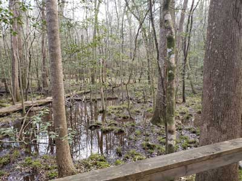
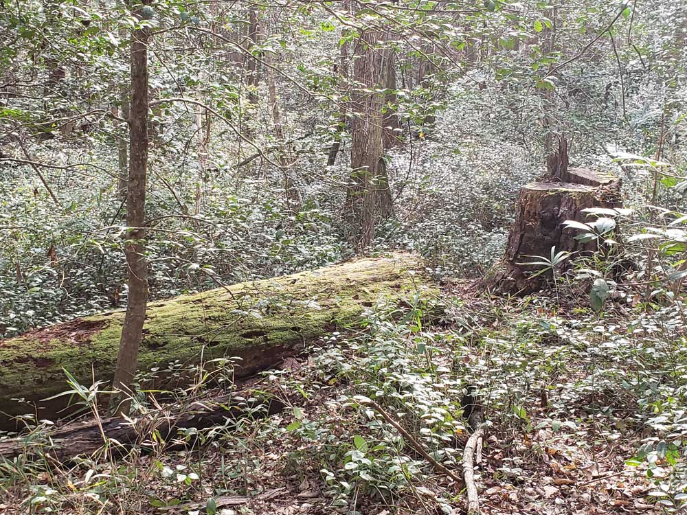
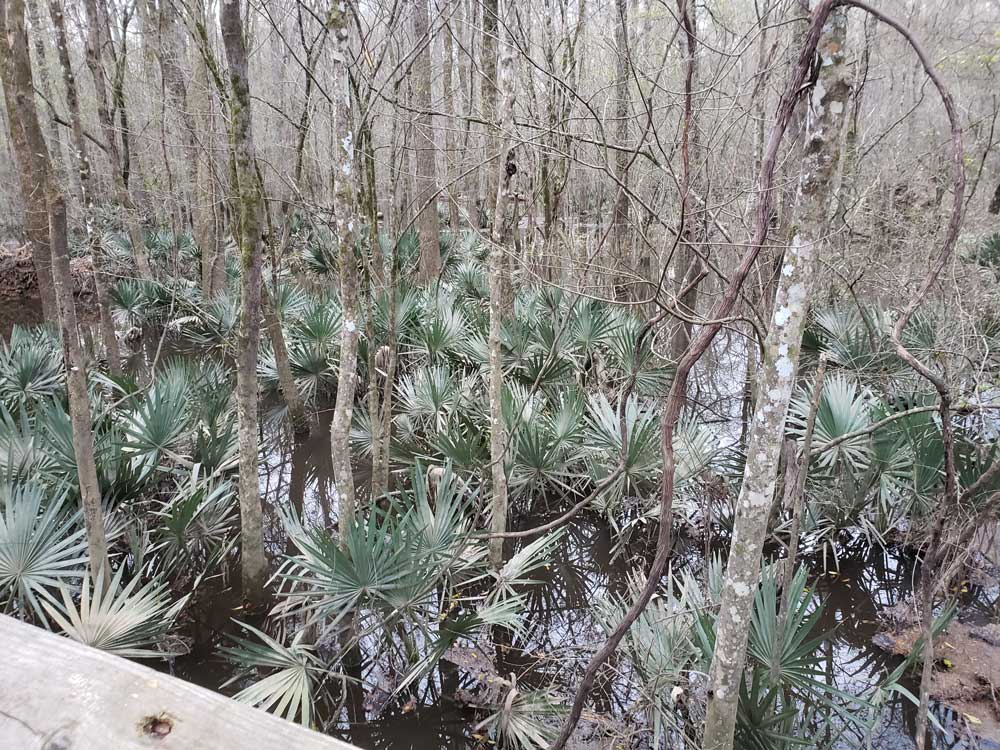
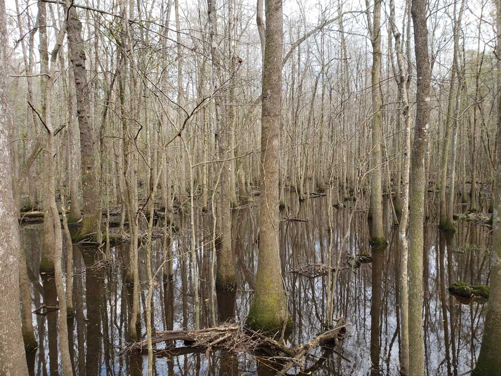
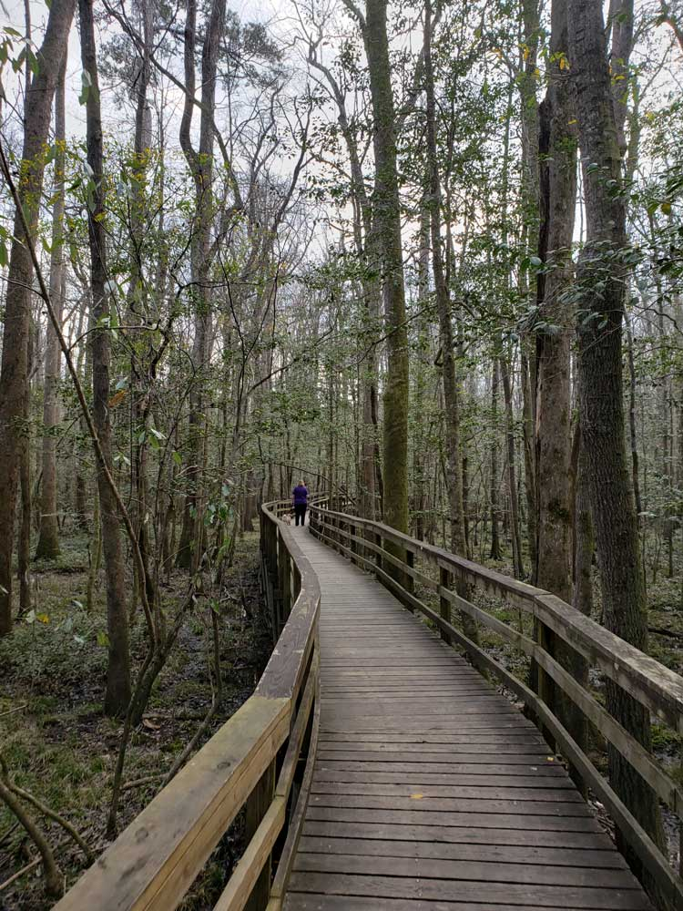

Park preserves the largest tract of old growth bottomland hardwood forest left in the United States. The lush trees growing in its floodplain forest are some of the tallest in the eastern United States, forming one of the highest temperate deciduous forest canopies remaining in the world
General Information
Harry Hampton Visitor Center hours vary seasonally; check current schedule before visiting
How to Get There
From Columbia (20 mi): Take I-77 South to Exit 5 for SC-48/Bluff Road, follow Bluff Road east for approximately 8 miles, continue onto Old Bluff Road, then follow National Park Road to Congaree National Park and the Harry Hampton Visitor Center at 100 National Park Road in Hopkins.
Overview
Congaree National Park in central South Carolina protects the largest intact expanse of old-growth bottomland hardwood forest in the southeastern United States. Its floodplain forest, along the Congaree River, grows some of the tallest trees in the eastern U.S., with a canopy that reaches over 150 feet and includes champion loblolly pines, bald cypress, and tupelo. The forest floods regularly, which feeds the trees and shapes the landscape, and the park contains a sample of the nation's richest hardwood forests. It is also a UNESCO Biosphere Reserve and an International Dark Sky Park.
The area was saved from logging by a grassroots campaign led by local conservationists, such as Harry Hampton, and became a national monument in 1976 and a national park in 2003. It is much quieter than most parks, and people visit to walk the elevated boardwalk through the forest, paddle quiet Cedar Creek, see the synchronous fireflies in late spring, and enjoy the stillness of the swamp. It is only about 20 miles from Columbia, which makes it an easy day trip.
Park Sections
The park is a single area, but it has a few distinct parts. Near the entrance, the Harry Hampton Visitor Center and the start of the boardwalk are located along Old Bluff Road. Behind it, the Bluff Trail, Oakridge Trail, and Weston Lake Loop reach deeper into the forest. The east side of the park along the Congaree River can be reached by the River Trail and by water. Weston Lake, an oxbow lake, is a highlight, and Cedar Creek is the main paddling route. Most of the park is wilderness, and some of it floods after heavy rain, closing trails.
Sightseeing and Exploring the Park
There is no scenic drive in the park, since the sights are on foot or by water. The park road leads from the town of Hopkins to the visitor center, passing farms and woods. The 2.4-mile Boardwalk Loop is the most popular way to see the old-growth forest and is accessible, with benches and signs about the forest's trees and wildlife. Paddling on Cedar Creek gives a different view, as quiet water flows beneath the canopy. In late May and early June, the synchronous fireflies attract visitors at night, with viewing by lottery or reservation. Check the park website for details.
Hiking
Congaree has about 25 miles of trails, mostly flat and shaded. The Boardwalk Loop (2.4 miles) is the easiest and the best introduction. The Weston Lake Loop (about 4.6 miles) leads to an oxbow lake, and the Bluff Trail (0.7 miles) is a short walk along a ridge. The Oakridge Trail (about 7.5 miles) and River Trail (about 10 miles) are longer and more remote, and the Kingsnake Trail (about 11 miles) is a long loop for backpackers. Trails can be muddy or flooded, and mosquitoes can be intense in summer, so check the park's mosquito forecast and bring repellent.
Other Activities
Paddling is the second main activity, with a 15-mile marked canoe trail on Cedar Creek that ranges from short trips to full-day outings, and ranger-led canoe tours in season. Other activities include fishing, birdwatching, camping, ranger programs, owl prowls, night sky programs, and the annual firefly viewing. The park is a quiet destination without commercial outfitters inside, but canoe rentals are available nearby. There are no cave tours. Columbia, 20 miles away, has museums, gardens, and restaurants for a longer visit.
Flora and Wildlife
The old-growth forest is the highlight. Giant loblolly pines, bald cypress with their "knees," water tupelo, sweetgum, and oaks form a canopy over a lush understory, and the park has several national and state champion trees. Wildlife includes barred owls, pileated woodpeckers, white-tailed deer, bobcats, river otters, armadillos, wild hogs, turtles, frogs, and snakes such as water snakes and cottonmouths. Fireflies, including a synchronous species, are a seasonal highlight. Wildlife viewing is on your own, and the boardwalk and Cedar Creek are the best spots.
Access
The park is about 20 miles southeast of Columbia, South Carolina, reached from I-77 exit 5 on SC-48 (Bluff Road) and then Old Bluff Road, about a 30-minute drive. Columbia Metropolitan Airport is about 30 minutes away, and Charleston is about 1.75 hours (110 miles) to the southeast. There is no public transportation. The park is reached by paved road, and the visitor center and boardwalk are accessible. Services are limited near the park, so bring water and food, and plan to eat in Columbia or the small communities nearby.
Seasons
Spring and fall are the best seasons, with mild temperatures and fewer mosquitoes; fall brings color in the cypress and tupelo, and winter is mild and quiet, with fewer insects. Summer is hot, humid, and buggy, but the forest is shaded, and late May to early June is firefly season. The park floods several times a year, usually after heavy rain in winter and spring, and the boardwalk may close when the water is high. The visitor center is open year-round. Check the National Park Service website for flood and mosquito conditions.
Camping and Lodging
The park has two campgrounds: Longleaf Campground, with about 10 sites near the visitor center that takes reservations, and the primitive Bluff Campground. Backcountry camping is allowed with a permit. There is no lodging in the park. Columbia has the closest hotels, including chain hotels near I-77 and boutique hotels downtown such as the Graduate and the Hotel Trundle, and Cayce and West Columbia, about 25 minutes from the park, have more chain options. Lake Murray and Sesquicentennial State Park have additional camping within an hour.
Visitor Centers
The Harry Hampton Visitor Center is the park's only visitor center and the starting point for the boardwalk. It has exhibits on the forest and its history, a film, a bookstore, and rangers who can advise on water levels, mosquitoes, and trails. The center is open daily, with some holiday closures. Hours may change by season, so check the National Park Service website.
Top Trails
Boardwalk Trail
Length: Approximately 2.6 miles round trip
Elevation Gain: Minimal
Difficulty: Easy
This accessible elevated boardwalk passes through old-growth floodplain forest and showcases some of the park's largest trees. Interpretive exhibits along the route make it ideal for first-time visitors and families.
Weston Lake Trail
Length: Approximately 4.5 miles round trip
Elevation Gain: Minimal
Difficulty: Moderate
One of the park's most scenic hikes, this trail follows portions of Cedar Creek and visits Weston Lake, an oxbow lake surrounded by ancient forest. Wildlife sightings commonly include birds, turtles, and occasionally river otters.
Oakridge Trail
Length: Approximately 7.1 miles loop
Elevation Gain: Minimal
Difficulty: Moderate
The Oakridge Trail travels through remote sections of old-growth forest and follows slight natural ridges that remain above many floodwaters. It offers a quieter experience for hikers seeking solitude and wildlife viewing opportunities.
River Trail
Length: Approximately 10 miles round trip
Elevation Gain: Minimal
Difficulty: Moderate to Difficult
This backcountry route follows the floodplain toward the Congaree River and provides a more rugged wilderness experience. Conditions can be muddy and navigation more challenging after floods.
Kingsnake Trail
Length: Approximately 11.7 miles loop
Elevation Gain: Minimal
Difficulty: Moderate to Difficult
The park's longest trail traverses diverse habitats including forests, wetlands, and areas near Cedar Creek. It is popular among experienced hikers and birdwatchers looking to explore the park's more remote wilderness areas.
Bluff Trail
Length: Approximately 1.8 miles loop
Elevation Gain: Minimal
Difficulty: Easy
The Bluff Trail begins near the Harry Hampton Visitor Center and follows a natural bluff that overlooks the Congaree floodplain. Unlike many trails in the park that traverse wetlands and bottomland hardwood forest, this route passes through upland pine and mixed hardwood habitats, providing a different perspective on the park's ecosystem. The trail offers opportunities for birdwatching, wildflower viewing, and learning about the transition between upland and floodplain environments. Its short length and level terrain make it an excellent option for families, beginner hikers, and visitors seeking a quick walk near the visitor center.
This article uses material from the Wikipedia article "Congaree National Park", released under the Creative Commons Attribution-Share-Alike License 3.0, along with visitor information from the National Park Service and Friends of Congaree.
Featured Trails

Jeff P from Berkeley, CA, USA, CC BY 2.0, via Wikimedia Commons; Image Size Adjusted
.jpg){kind=link}
Boardwalk Loop
2.4 miles loop, 13 feetElevated walkway through the swampy environment that protects delicate fungi and plant life at ground level



